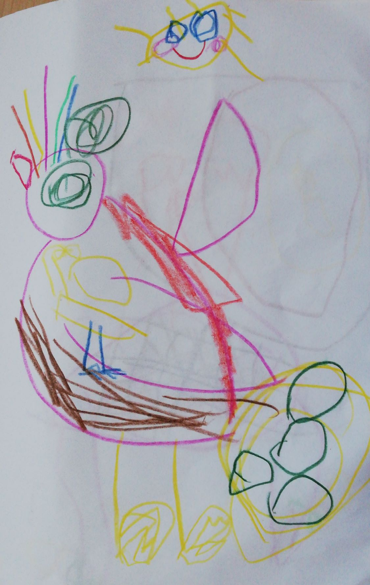
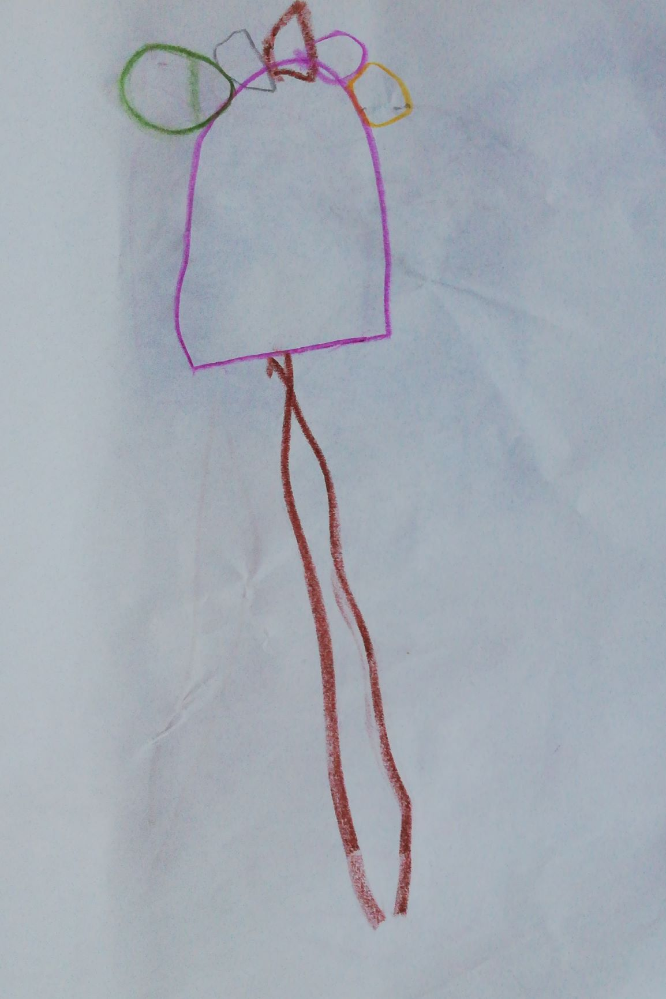

Galerie
Soubor tvorby znázorňující různé druhy tvorstva tohoto světa. Bytosti
existující i neexistující.
Galerie
Každý předmět může být k něčemu dobrý. Některé jsou chutné, jinými se
dá bít vše kolem.


Galerie
Když abstrahuji od konkrétního a zasním-li se, připadají mi věci kolem
mě trochu méně určité, avšak o to více inspirující.